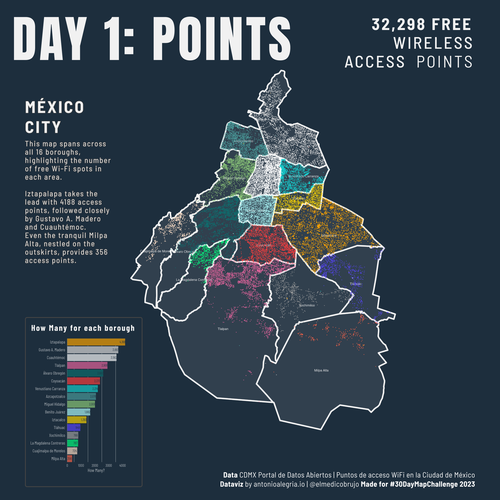

Yes! 30 Days of Maps!

I will try to make the code and sources available for every map when time allows me. It will be linked to my GitHub repository. If not today, I promise when the challenge is over. Happy map month, everybody!
The idea is to create maps based around different themes each day of November using the hashtag #30DayMapChallenge. You can prepare the maps beforehand, but the main idea is to publish maps on the dedicated days. Just include a picture of the map when you post to Twitter (or other platforms) with the hashtag. You don’t have to sign up anywhere to participate. There are no restrictions on the tools, technologies or the data you use in your maps. Doing less than 30 is also fine. See the Code of Conduct.
I will try to make the code and sources available for every map when time allows me. It will be linked to my GitHub repository. If not today, I promise when the challenge is over. Happy map month, everybody!
Mapping 32K free wireless access points in Mexico City. They are part of 17 public programs distributed in places like public transport, medical centers, schools and universities.
Source: CDMX Datos Abiertos

Mapping the ridership on the Glasgow Subway line. Unfortunately, there’s not much information or data easily available on the ridership of the system. I could only find some annual reports from 2015 and a 2019 Freedom of Information Act request from Patrick Murphy.
Source: Freedom Of Information Act and of course Open Street Maps